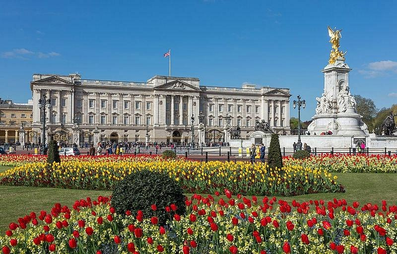

[버킹엄 궁전] 근위병 교대식과 함께한 왕실의 하루

런던의 중심부, 세인트 제임스 공원을 지나 펼쳐지는 웅장한 궁전. 영국 왕실의 상징이자 국왕의 공식 거처인 **버킹엄 궁전(Buckingham Palace)**은 그 자체로 역사이자 문화다. 관광객들로 붐비는 그 앞 광장에서는 매일같이 플래시가 터지고, 고요한 돌담 너머로는 여전히 ‘왕실의 일상’이 이어지고 있다.
가장 많은 이들이 찾는 시간은 단연 **근위병 교대식**이 있는 오전 11시. 클래식한 군악대의 연주와 함께 진홍색 제복을 입은 근위병들이 일사불란하게 걷는 장면은, 단순한 행사라기보다 하나의 예술 공연처럼 느껴진다. 사람들은 여유롭게 광장 주변을 돌며 포토 스팟을 찾고, 아이들은 근위병들의 털모자와 행진에 시선을 뗄 줄 모른다.
교대식은 약 40분간 진행되며, 왕실의 전통을 그대로 계승하는 장면들을 가까이에서 지켜볼 수 있다. 계절이나 날씨에 따라 스코틀랜드 연주가 포함되기도 하고, 국가적인 행사일에는 특별한 편성이 이루어지기도 한다. 궁전 앞 철제 울타리 사이로 바라보는 그들의 절도 있는 움직임은 런던 여행의 하이라이트 중 하나로 손꼽힌다.
물론, 교대식만이 전부는 아니다. 궁전 자체가 갖는 역사적 무게감은 실로 대단하다. 1837년 빅토리아 여왕 즉위 이래 영국 왕의 공식 거처로 사용되어 온 이 궁전은 775개의 방을 갖추고 있으며, 공식 행사, 외교 접견, 왕실 가족의 일상이 이곳에서 이어지고 있다. 여름 시즌에는 일부 내부 공간이 일반에 개방되어 왕실 예술품과 접견실, 정원 등을 직접 볼 수 있는 특별한 기회도 주어진다.
궁전 주변도 놓치지 말아야 할 명소로 가득하다. 정문 앞 **빅토리아 기념탑(Victoria Memorial)**은 조각과 분수가 어우러진 광장 중심의 조형물로, 궁전의 위엄을 한층 더한다. 또한, 주변의 세인트 제임스 공원은 런던에서 가장 아름다운 공원 중 하나로, 다양한 철새와 자연 풍경이 어우러져 근위병 교대식을 기다리는 동안 여유롭게 산책하기에 좋다.
조금 더 발걸음을 옮기면 **더 몰(The Mall)**이라 불리는 붉은 색 도로가 런던의 왕실 행렬의 무대가 되는 거리로 펼쳐진다. 대관식, 국빈 방문, 공식 퍼레이드가 이 길을 통해 진행되며, 우리가 영화나 뉴스에서 본 ‘왕실’의 장면들이 실현되는 현장이 바로 여기다.
버킹엄 궁전은 단순한 관광 명소가 아니다. 그것은 영국이라는 나라의 상징이자, 과거와 현재를 잇는 실질적인 공간이다. 평범한 하루 속에서도, 이 궁전 앞에 서면 ‘역사 속 한 장면’ 속에 들어온 듯한 느낌이 든다. 근위병의 발걸음, 군악대의 연주, 그리고 조용히 날리는 유니언잭 깃발은 이곳이 여전히 살아 있는 왕국임을 느끼게 해준다.
만약 런던 여행 중 단 한 곳의 왕실 장소를 꼽아야 한다면, 주저 없이 이곳을 추천할 수 있다. 아이들과 함께 보기에도 좋고, 역사에 관심이 있는 사람이라면 하루 종일 머물러도 시간이 모자랄 만큼 풍부한 경험을 선사한다.
카메라에 담긴 근위병의 모습과 함께, 마음속에 오래 남는 영국 왕실의 품격. 버킹엄 궁전은 단순히 왕이 사는 집이 아니라, 영국 국민의 자부심과 전통이 깃든 상징적 공간이다. 붉은 제복, 웅장한 궁전, 세심하게 다듬어진 정원과 광장. 이 모든 것이 어우러진 이곳에서, 당신도 ‘왕실의 하루’를 함께 느껴보길 바란다.